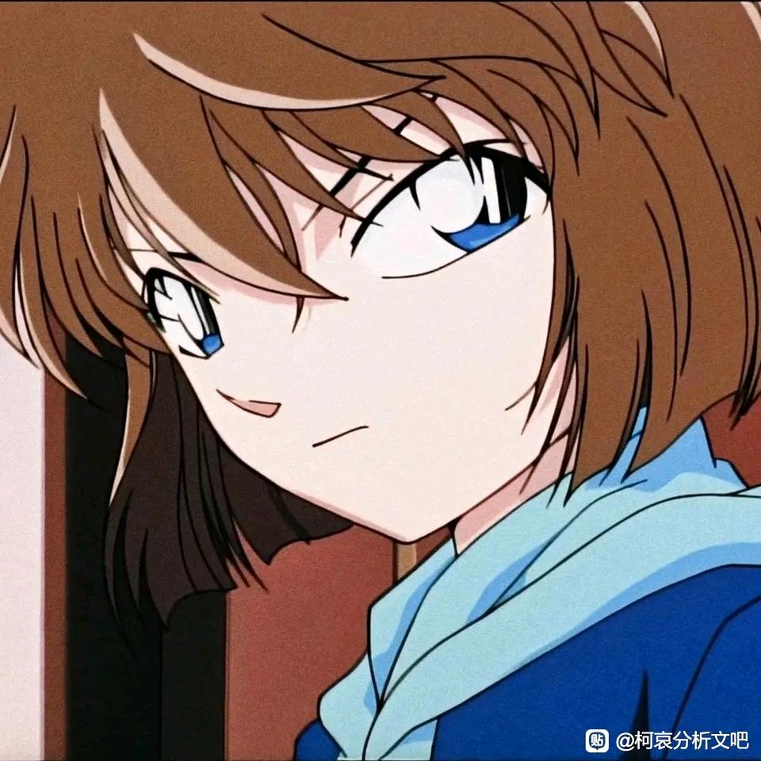
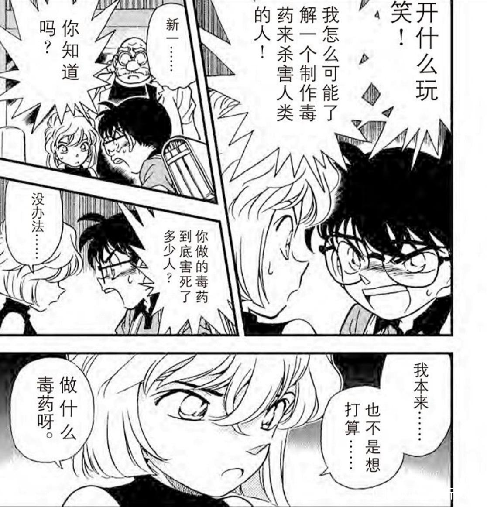
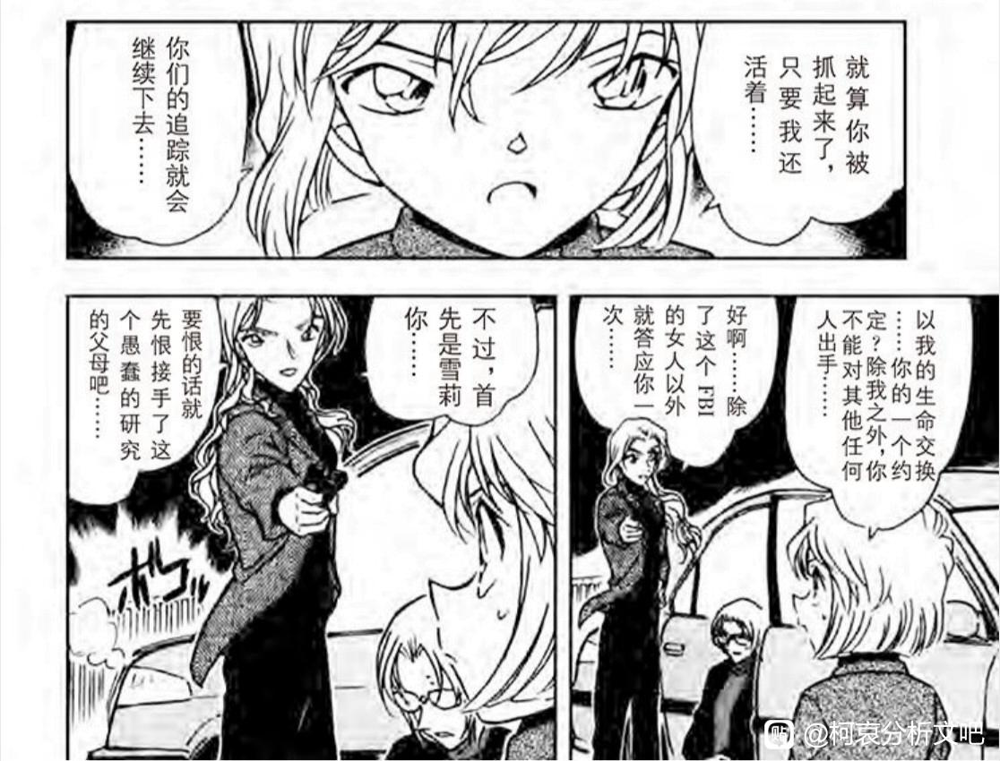

自封为“出轨研究专家“或者“反出轨达人“，我觉得这可能是哀的一种，出于自我高道德标准下的自身约束前置行为。
换句话就是过高的自我道德标准，让矛盾的哀走向了一种极端的行为克制。

1楼 | 侧脸看见哀 | 2023-10-04 01:03
漫画的塑造中哀就是一个具有高道德感的角色，无论是初见被柯南称为“制作毒药杀害人类的人”没有做过多辩解，还是一直想独自承担被组织发现的后果，不牵连他人都可以看得出。


2楼 | 侧脸看见哀 | 2023-10-04 01:05
2023-10-04 02:27 | 落星为萤º:我觉得灰原的性格并不是一成不变的，她在组织种的时候道德观念恐怕没有太高，只能说有基本的道德底线，但是来到红方就不一样了，这边有帮助她，保护她，真心拿她当朋友的人，灰原感激他们并且不想伤害他们，这才使她的道德观念开始上升。
2023-10-04 02:28 | 落星为萤º:出轨研究专家更像是她处在这种三角恋环境下产生出的想法，她喜欢柯南，但又不想破坏柯南的感情，因此出现了这种人设
哀是喜欢柯南（工藤新一）的，但是在她的视角中或者说认知中，工藤是喜欢兰的，而兰也是喜欢工藤的，甚至她认为的新兰告白要较剧情（好，强迫式告白也勉强算告白）更早。这样高道德感的哀，内心是不允许自己喜欢上这样的柯南（工藤）的，而这种情况下工藤若是回应了自己的情感也将与哀的内心道德产生冲突，这种高道德感让她在希望得到爱，和误解产生的道德背离中矛盾并煎熬。
为了增强自己内心中的合理性和肯定性，哀以“出轨研究专家”自称，这样就可以实现:我是出轨研究专家，出轨研究专家是研究出轨问题的专家，是绝对不会犯出轨相关的错误的，同时也有义务让朋友们免受出轨问题的困扰。
结果上就是加重自己心中:我不能爱上工藤，工藤也不能爱上我的这种认知。
3楼 | 侧脸看见哀 | 2023-10-04 01:06
2023-10-04 02:31 | 落星为萤º:个人觉得不是我不能爱上工藤，而是我不能破坏工藤跟小兰的感情，破坏工藤的生活，哀要是真不想爱上新一，她就不会跟新一有这么多互动，会故意和新一离得远远的
同样也可以解释小黑鱼里的还吻小兰。
在这个角度上，“出轨研究专家“这个看上去有些欢乐的称呼和情节设置，显得哀无助又有些可怜。
4楼 | 侧脸看见哀 | 2023-10-04 01:07
5楼 | 侧脸看见哀 | 2023-10-04 01:09
我感觉只是增加角色层次感加的设定，毕竟灰原也是少女，看恋爱杂志，会追星犯花痴，这种八卦专家的设定，显得灰原更有少女感了😀
6楼 | yuanleqi7 | 2023-10-04 12:28
可以看看我的帖子，里面有提到这个。结论来说，我的看法是哀并没有“过高”的道德感，只是普普通通的三观正常而已。出轨研究专家这个头衔解读为她的八卦性格，以及自称理论专家但实际上并没有恋爱经验的反差萌就好了（实际上无论是米花fm还是原作漫画里，她判的出轨就没有对的，基本上是乱判案）。即使稍微解读深一点，最多也只到“通过这种方式掩饰自己在感情方面的不擅长的自我保护”，以及她对出轨敏感这件事本身可以推出来她比较专情，甚至占有欲强。最多就到这里了，是不至于到“高道德感”这个结论的。至于为什么我帖子里有讲到。
7楼 | | 2023-10-05 10:29